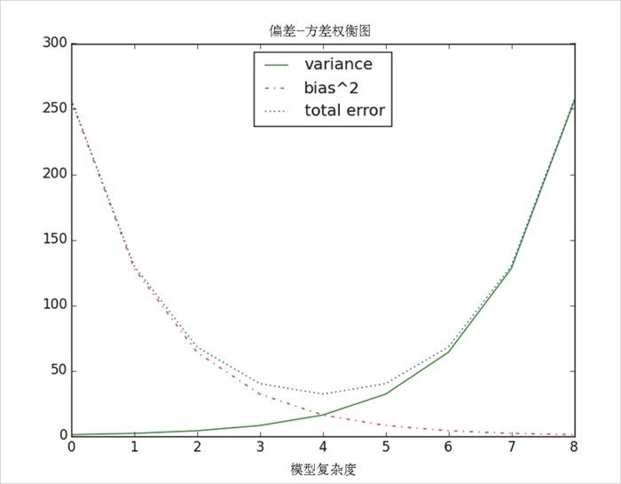

3.3 线图
前面提过，可以用 plt.plot() 来制作线图。这种图形可以用来清晰地显示某种事物的趋势 ，如图 3-6 所示：
variance = [1, 2, 4, 8, 16, 32, 64, 128, 256]
bias_squared = [256, 128, 64, 32, 16, 8, 4, 2, 1]
total_error = [x + y for x, y in zip(variance, bias_squared)]
xs = [i for i, _ in enumerate(variance)]
# 可以多次调用plt.plot
# 以便在同一个图上显示多个序列
plt.plot(xs, variance, 'g-', label='variance') # 绿色实线
plt.plot(xs, bias_squared, 'r-.', label='bias^2') # 红色点虚线
plt.plot(xs, total_error, 'b:', label='total error') # 蓝色点线
# 因为已经对每个序列都指派了标记
# 所以可以自由地布置图例
# loc=9指的是“顶部中央”
plt.legend(loc=9)
plt.xlabel("模型复杂度")
plt.title("偏差-方差权衡图")
plt.show()

图 3-6：带有图例的几个线图